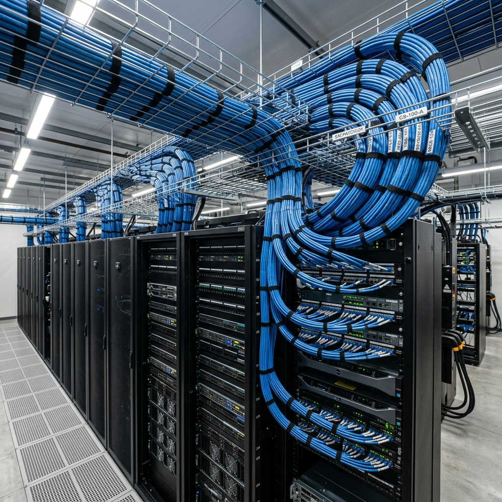

High-Density Cat8 Structured Cabling: 2026 40GBASE-T Data Center Architecture

1. Executive Summary: The 40GBASE-T Copper Imperative
As enterprise data centers, hyperscale cloud facilities, and financial trading hubs transition to ultra-dense server virtualization, AI cluster computing, and NVMe-over-Fabrics (NVMe-oF) storage architectures, internal bandwidth demands have scaled exponentially. To prevent catastrophic data bottlenecks at the Top-of-Rack (ToR) and End-of-Row (EoR) switching layers, enterprise physical layer architectures must support 25GBASE-T and 40GBASE-T transmission speeds over twisted-pair copper.
While twinaxial direct-attach copper (DAC) cables provide high-speed connectivity for short, in-rack server jumps (`<5 meters`), and optical fiber provides immense bandwidth for long inter-building trunks, Category 8 structured cabling represents the definitive, cost-effective physical layer solution for high-density 30-meter data center cross-connects. Cat8 delivers full 40 Gbps symmetric throughput utilizing familiar, field-terminable RJ45 or Class II ARJ45 connectors, eliminating the extreme cost and fragility associated with deploying multi-mode optical transceivers for short cabinet-to-cabinet links.
```
+------------------------+-----------------------------------+-----------------------------------+
| Cabling Specification | Legacy Category 6A | 2026 Category 8 (Class I / II) |
+------------------------+-----------------------------------+-----------------------------------+
| Maximum Data Rate | 10 Gbps (10GBASE-T) | 40 Gbps (40GBASE-T) |
| Operating Frequency | 500 MHz | 2,000 MHz (2 GHz) |
| Maximum Channel Length | 100 Meters | 30 Meters (Data Center Topology) |
| Shielding Architecture | U/UTP or F/UTP | Mandatory S/FTP (Shielded Pairs) |
| Alien Crosstalk (ANEXT)| High Risk in Unshielded Bundles | Near-Zero (Continuous Foil/Braid) |
+------------------------+-----------------------------------+-----------------------------------+
```
This comprehensive architectural guide establishes the definitive 2026 engineering standards for high-density Category 8 structured cabling. Data center managers, senior network architects, and infrastructure engineers will explore the rigorous 2 GHz high-frequency physics, S/FTP grounding mechanics, and Fluke DSX-8000 certification protocols required to deploy flawless, carrier-grade 40GBASE-T copper infrastructure.
2. 2 GHz High-Frequency Physics & Class I / Class II Channel Limits
Operating at 40 Gbps over twisted-pair copper requires pushing transmission frequencies to an unprecedented 2,000 MHz (2 GHz)—four times the operating frequency of legacy Category 6A (`500 MHz`). At these extreme high frequencies, the physical and electromagnetic behavior of copper conductors changes dramatically.
Skin Effect & High-Frequency Attenuation
As transmission frequencies escalate into the 2 GHz spectrum, alternating current (AC) no longer flows uniformly through the entire cross-sectional area of a copper wire. Instead, electromagnetic eddy currents force the electrical data signals to migrate outward, flowing almost exclusively along the absolute outer microscopic perimeter (skin) of the copper conductor—a fundamental physical phenomenon known as the Skin Effect.
```
+-------------------------------------------------------------------+
| High-Frequency Skin Effect & Current Density Migration |
+-------------------------------------------------------------------+
| |
| Cat6A (500 MHz): Current utilizes majority of copper cross-section|
| ( ( ( ( ( ( ( ( ( ( ( ( ( ( ( ( ( ( ( ) ) ) ) ) ) ) ) ) ) ) ) ) )|
| |
| Cat8 (2,000 MHz): Current forced entirely to outer perimeter |
| (==================== [ EMPTY CORE ] ====================) |
| ( Current Density concentrated entirely on outer skin layer ) |
+-------------------------------------------------------------------+
```
Because the effective conductive area is drastically reduced, electrical resistance increases significantly, causing rapid signal attenuation (insertion loss) over distance. To counteract high-frequency skin effect attenuation, Category 8 cables are manufactured utilizing thicker 22 AWG solid copper conductors. The increased surface area of the 22 AWG conductors provides the necessary physical pathway to sustain 2 GHz signal integrity without experiencing catastrophic decibel loss.
The 30-Meter Data Center Topology Limit (ISO/IEC 11801-1)
Due to the aggressive attenuation physics governing 2 GHz transmission, international cabling standards (ISO/IEC 11801-1 and TIA-568.2-D) strictly constrain the maximum allowable channel length for Category 8 deployments to exactly 30 meters (98 feet).
```
+-------------------------------------------------------------------+
| Category 8 30-Meter Data Center Channel Topology (2-Connector) |
+-------------------------------------------------------------------+
| |
| [ ToR Switch ] |
| | ( 2m Patch Cord ) |
| [ Patch Panel A ] <=== 24m Permanent Link ===> [ Patch Panel B ] |
| | |
| ( 4m Patch Cord ) |
| | |
| [ Server NIC ] |
+-------------------------------------------------------------------+
```
The 30-meter Cat8 channel is specifically engineered for Top-of-Rack (ToR), End-of-Row (EoR), and Middle-of-Row (MoR) data center topologies. A standard compliant Cat8 channel consists of a maximum 24-meter solid copper permanent link paired with up to 6 meters of combined 24 AWG stranded patch cords across a maximum 2-connector configuration. Attempting to deploy Category 8 cabling beyond 30 meters will result in massive insertion loss and complete failure of 40GBASE-T active switch link negotiation.
3. S/FTP Shielding Architecture & ANEXT Elimination
At 2,000 MHz operating frequencies, the electromagnetic fields radiating from individual twisted copper pairs are exceptionally intense. In high-density server cabinets where dozens of Cat8 cables are tightly bundled together within vertical zero-U managers, eliminating crosstalk is the paramount engineering challenge.
```
+------------------------+-----------------------------------+-----------------------------------+
| Crosstalk Parameter | Physical Cause | Cat8 S/FTP Engineering Solution |
+------------------------+-----------------------------------+-----------------------------------+
| Internal NEXT | Coupling between adjacent pairs | Individual Pair Aluminum Foil Wrap|
| Internal FEXT | Far-end coupling along cable run | Meticulous Pair Twist Rate Tuning |
| Alien Crosstalk (ANEXT)| Coupling between adjacent cables | Overall Tinned Copper Braid Shield|
| EMI / RFI Noise | External data center power feeds | Continuous 360-Degree Grounding |
+------------------------+-----------------------------------+-----------------------------------+
```
Mandatory S/FTP Shielding Construction
To guarantee absolute signal isolation, Category 8 standards completely prohibit unshielded (U/UTP) constructions. Cat8 cables mandate a rigorous Shielded/Foiled Twisted Pair (S/FTP) mechanical architecture.
```
+-------------------------------------------------------------------+
| Category 8 S/FTP Mechanical Cable Construction Profile |
+-------------------------------------------------------------------+
| |
| [ Outer LSZH Sheath ] (CPR Euroclass B2ca / Cca compliant) |
| | |
| +--> [ Overall Tinned Copper Braid Shield ] (ANEXT Eliminator) |
| | |
| +--> [ Individual Aluminum Foil Wrap ] (Pair 1 - Blue) |
| +--> [ Individual Aluminum Foil Wrap ] (Pair 2 - Orange)|
| +--> [ Individual Aluminum Foil Wrap ] (Pair 3 - Green) |
| +--> [ Individual Aluminum Foil Wrap ] (Pair 4 - Brown) |
+-------------------------------------------------------------------+
```
Every individual copper pair is wrapped in a continuous, overlapping layer of aluminum Mylar foil. This internal foil shield reflects and absorbs electromagnetic energy, completely eliminating internal Near-End Crosstalk (NEXT) between adjacent pairs within the same cable sheath.
Furthermore, the four foil-wrapped pairs are encased within a heavy-duty, overall tinned copper braid shield. This dense metallic braid acts as an impenetrable Faraday cage, completely absorbing external electromagnetic interference (EMI) and reducing Alien Crosstalk (ANEXT) between adjacent cables in a bundle to near-zero levels.
Grounding and Bonding Discipline (BS EN 50310)
Deploying high-density S/FTP Category 8 cabling requires implementing an uncompromising, end-to-end grounding and bonding architecture in strict accordance with British Standard BS EN 50310 and TIA-607-C.
```
+-------------------------------------------------------------------+
| Cat8 S/FTP 360-Degree Patch Panel Grounding Architecture |
+-------------------------------------------------------------------+
| |
| [ Cat8 S/FTP Cable ] ---> ( Overall Tinned Copper Braid ) |
| | |
| [ 360-Degree Metallic Keystone Clamp ] |
| | |
| [ Fully Shielded Cat8 Patch Panel ] |
| | |
| [ Heavy-Gauge 6 AWG Copper Grounding Bonding Conductor ] |
| | |
| [ Telecommunications Grounding Busbar (TGB) ] |
+-------------------------------------------------------------------+
```
When terminating Cat8 keystone jacks, technicians must ensure the cable's overall tinned copper braid makes flawless, 360-degree physical contact with the metallic housing of the shielded keystone module. The fully shielded patch panels must be bonded directly to the cabinet's vertical grounding busbar, which in turn connects to the main Telecommunications Grounding Busbar (TGB) utilizing heavy-gauge copper wire. If a Cat8 shielding system is improperly grounded, the metallic foil and braid act as ungrounded antennas, actively absorbing ambient data center electrical noise and dumping it directly into the differential data pairs, causing massive packet loss.
4. Fluke DSX-8000 2G Certification & Testing Parameters
Certifying a Category 8 installation requires deploying elite diagnostic testing instrumentation capable of generating and analyzing electrical signals across the entire 2 GHz spectrum, specifically the Fluke Networks DSX-8000 CableAnalyzer.
```
+------------------------+-----------------------------------+-----------------------------------+
| Certification Standard | Fluke DSX-5000 (Cat6A / 500 MHz) | Fluke DSX-8000 (Cat8 / 2,000 MHz) |
+------------------------+-----------------------------------+-----------------------------------+
| Frequency Testing Range| 1 MHz to 500 MHz | 1 MHz to 2,000 MHz (2 GHz) |
| Permanent Link Adapters| Standard Cat6A RJ45 Adapters | Dedicated Cat8 Class I/II Adapters|
| Test Execution Time | ~10 Seconds | ~16 Seconds (Full 2G Frequency) |
| Shield Integrity Test | Basic Continuity Check | Advanced Shield Unbalance Testing |
| Accuracy Level | Level IIIe | Level 2G (Ultra-Precision) |
+------------------------+-----------------------------------+-----------------------------------+
```
Fluke DSX-8000 Level 2G Certification
Legacy cable analyzers (such as the Fluke DSX-5000) peak at 1,000 MHz and are completely incapable of certifying Category 8 infrastructure. The Fluke DSX-8000 is an ultra-precision Level 2G testing instrument engineered to execute high-density frequency sweeps up to 2,000 MHz.
During an automated test script, the DSX-8000 captures high-resolution electrical measurements across every twisted pair, evaluating wire map integrity, insertion loss, return loss, NEXT, PSNEXT, ACR-F, PSACR-F, and TCL against TIA-568.2-D Category 8 and ISO/IEC 11801 Class I/II limits.
DC Loop Resistance Unbalance Testing for PoE++ 100W
In modern data center environments, Category 8 cabling is frequently tasked with delivering IEEE 802.3bt Type 4 Power over Ethernet (PoE++ 100W) to power high-capacity Top-of-Rack management controllers and active containment sensors.
```
+-------------------------------------------------------------------+
| Fluke DSX-8000 DC Loop Resistance Unbalance Diagnostic Screen |
+-------------------------------------------------------------------+
| Pair 12-36: Resistance Unbalance = 0.05 ohms (PASS - Excellent) |
| Pair 45-78: Resistance Unbalance = 1.45 ohms (FAIL - Core Saturation)
| |
| * Diagnostic Action: Re-terminate keystone jack on Pair 45-78 * |
+-------------------------------------------------------------------+
```
To ensure flawless PoE++ delivery, the Fluke DSX-8000 executes rigorous DC Loop Resistance Unbalance testing. Within a 4-pair PoE++ cable, direct current must flow perfectly evenly between the two conductors of each twisted pair. If improper termination techniques, over-tightened zip ties, or damaged keystone jacks introduce a minor resistance unbalance between the two wires, current will flow asymmetrically. This uneven electrical flow creates a differential magnetic field inside the ToR switch port isolation transformer, causing magnetic core saturation that distorts 40GBASE-T data waveforms and results in massive CRC packet loss.
5. Comprehensive Expert Frequently Asked Questions
What is the maximum allowable channel length for Category 8 cabling and why is it restricted?
Under international cabling standards (ISO/IEC 11801-1 and TIA-568.2-D), the maximum allowable channel length for Category 8 deployments is strictly restricted to exactly 30 meters (98 feet). This limitation is dictated by the extreme physical attenuation laws governing 2,000 MHz (2 GHz) high-frequency transmission. At 2 GHz, the Skin Effect forces electrical current to flow almost exclusively along the outer microscopic perimeter of the copper conductors, dramatically increasing electrical resistance. Restricting the channel to 30 meters (typically a 24m permanent link and 6m of patch cords) ensures the cabling plant maintains the necessary signal-to-noise ratio to successfully negotiate 40GBASE-T data rates in data center environments.
What is the exact mechanical difference between Cat8 Class I and Class II cabling?
Category 8 is divided into two distinct performance classes under ISO/IEC 11801 standards. Class I cabling utilizes standard, backward-compatible RJ45 connectors paired with S/FTP copper cabling, supporting 2,000 MHz operating frequencies and providing seamless integration with existing enterprise networking hardware. Class II cabling utilizes specialized, non-RJ45 connectors (such as the TERA or ARJ45 interfaces) paired with elite F/FTP or S/FTP cabling. Class II provides superior high-frequency performance and extreme crosstalk isolation, operating up to 2,000 MHz but requiring dedicated, matching Class II equipment interfaces across the data center switching layer.
Why is S/FTP shielding mandatory for Category 8 deployments, and how does it eliminate ANEXT?
Category 8 standards completely prohibit unshielded (U/UTP) constructions, mandating a rigorous Shielded/Foiled Twisted Pair (S/FTP) mechanical architecture. Operating at 2 GHz, the electromagnetic fields radiating from copper pairs are exceptionally intense. In S/FTP cables, every individual copper pair is wrapped in aluminum Mylar foil to completely eliminate internal Near-End Crosstalk (NEXT). Furthermore, the four foil-wrapped pairs are encased within a heavy-duty tinned copper braid shield. This dense metallic outer braid acts as an impenetrable Faraday cage, completely absorbing external electromagnetic interference (EMI) and reducing Alien Crosstalk (ANEXT) between adjacent cables in a bundle to near-zero levels.
How does Fluke DSX-8000 DC Loop Resistance Unbalance testing prevent ToR switch port failure under 100W PoE++ loads?
When Category 8 cabling delivers IEEE 802.3bt Type 4 Power over Ethernet (PoE++ 100W), direct current must flow perfectly evenly between the two conductors of each twisted pair. If improper termination techniques or damaged keystone jacks introduce a resistance unbalance between the two wires, current flows asymmetrically. This uneven electrical flow creates a differential magnetic field inside the Top-of-Rack (ToR) switch port isolation transformer, causing magnetic core saturation. Core saturation severely distorts 40GBASE-T data waveforms, resulting in massive CRC packet loss and potential switch port hardware failure. Fluke DSX-8000 resistance unbalance testing identifies these micro-termination flaws before active switch commissioning.
What are the mandatory grounding and bonding requirements for Cat8 S/FTP installations under BS EN 50310?
Deploying shielded Cat8 S/FTP cabling requires implementing an uncompromising grounding and bonding architecture in strict accordance with British Standard BS EN 50310 and TIA-607-C. When terminating Cat8 keystone jacks, technicians must ensure the cable's overall tinned copper braid makes flawless, 360-degree physical contact with the metallic housing of the shielded keystone module. The fully shielded patch panels must be bonded directly to the server cabinet's vertical grounding busbar utilizing heavy-gauge copper wire, which connects back to the main Telecommunications Grounding Busbar (TGB). If improperly grounded, the metallic foil acts as an antenna, actively absorbing ambient data center electrical noise and corrupting active 40 Gbps data streams.